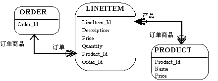
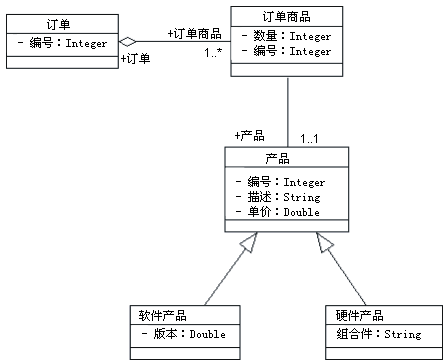
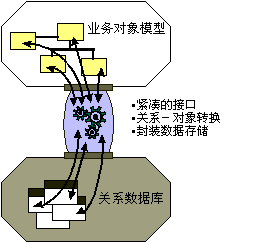

| 概念：关系数据库和面向对象 |
 |
|
简介本概念文档概述了对象模型和关系数据模型，并简单描述了持久框架。 关系数据库和面向对象关系数据库和面向对象并不完全兼容。它们代表两种不同的世界视图：在 RDBMS 中，所看到的都是数据；在面向对象的系统中，所看到的都是行为。不存在一种观点优于另一种观点的问题：面向对象模型对有复杂行为和特定于状态行为（在这些行为中，数据是次要的）的系统或数据可以自然层次结构浏览访问（例如，材料清单）的系统能够很好工作。RDBMS 模型非常适合报表应用程序和系统，其中关系是动态或特殊的。 真正的问题是有许多信息存储在关系数据库中，而如果面向对象的应用程序希望访问该数据，它们需要能够读写 RDBMS。 另外，面向对象的系统通常需要与非面向对象的系统共享数据。因此很自然地，使用 RDBMS 作为共享机制。 当面向对象和关系设计共享某些公共特征时（对象属性概念上与实体列类似），基础不同导致无缝集成成为一项挑战。基础不同指的是数据模型通过列值显示数据，而对象模型通过将数据封装在其公共接口之后来隐藏数据。 关系数据模型关系模型由实体和关系组成。实体可以是一个物理表，或几个表的逻辑投影（也称为视图）。下图说明 LINEITEM、ORDER 和 PRODUCT 表以及它们之间的各种关系。关系模型有以下元素：  关系模型 实体有列。使用名称和类型标识每个列。在上图中，LINEITEM 实体有列 LineItem_Id（主键）、Description、Price、Quantity、Product_Id 和 Order_Id（最后两列是将 LINEITEM 实体链接到 ORDER 和 PRODUCT 实体的外键）。 实体有记录或行。每行表示唯一的一组信息，该信息通常表示对象的持久数据。 每个实体有一个或更多主键。LineItem_Id 是 LINEITEM 的主键。 对关系的支持特定于供应商。该示例说明逻辑模型及 PRODUCT 和 LINEITEM 表之间的关系。在物理模型中，通常使用外键／主键引用来实施关系。如果一个实体与另一个实体相关，则它将包含作为外键的列。外键列包含的数据可将该实体中的特定记录关联到相关实体。 关系具有多重性（也称为基数）。常见的基数有一对一（1:1）、一对多（1:m）、多对一（m:1）和多对多（m:n）。在该示例中，LINEITEM 与 PRODUCT 有 1:1 关系，而 PRODUCT 与 LINEITEM 有 0:m 关系。 对象模型除了其他内容，对象模型还包含类（请参阅 [UML01] 以获取对象模型的完整定义）。类定义一组对象的结构和行为，有时也称为对象实例。将结构表示为属性（数据值）和关联（类之间的关系）。下图说明一个简单类图，仅显示了类的属性（数据）。  对象模型（类图） 订单有一个编号（订单号）和与 1 个或更多（1..*）订单商品的关联。每个订单商品都有一个数量（订购数量）。 对象模型支持继承。类可以从另一个类继承数据和行为（例如，SoftwareProduct 和 HardwareProduct 产品从 Product 类继承属性和方法）。 持久框架大多数业务应用程序都将关系技术用作物理数据存储。面向对象的应用程序开发者所面临的挑战是充分地分离和封装关系数据库，以便数据模型中的更改不会“中断”对象模型（反过来也一样）。现有的许多解决方案让应用程序直接访问关系数据；挑战在于实现对象模型和数据模型之间的无缝集成。 数据库应用程序编程接口（API）提供标准的样式（例如，Microsoft 的开放数据库连接 API 或 ODBC）并且是专用的（本机绑定至特定数据库）。这些 API 提供数据操作语言（DML）传递服务，这些服务允许应用程序访问原始关系数据。在面向对象的应用程序中，应用程序使用这些数据之前，必须对数据进行对象－关系转换。这需要可观的应用程序代码量，来将原始数据库 API 结果转换成应用程序对象。对象－关系框架的用途是一般地封装物理数据存储，并提供适当的对象转换服务。  持久框架的用途 在面向对象的应用程序中，应用程序开发者将花费超过 30% 的时间来实施关系数据库访问。如果没有正确实施对象－关系接口，则该项投资将丢失。实施对象－关系框架则抓住此投资。在以后的应用程序中可以重用该对象－关系框架，将对象－关系实施成本减少至低于总实施成本的 10%。实施任何系统时要考虑的最重要成本是维护。系统在其整个生命周期上总成本的 60% 以上都用于维护。实施较差的对象－关系系统的维护，无论是技术上还是经济上都有严重问题。 对象－关系框架的基本特征
公共对象－关系服务
在对象－关系应用程序中显现了一些常见模式。已反复解决过该问题的 IT 专家开始理解和认识到成功的对象－关系应用程序所展示的某些结构和行为。高级 CORBA 服务规范已将这些结构和行为规范化（同样非常适用于基于 COM/DCOM
的系统）。 以下部分将使用这些类别来构造对常见对象－关系服务的讨论。希望读者能够参考相应的 CORBA 规范以获取更详细信息。 持久性术语持久性用于描述对象如何利用辅助存储介质在离散的会话之间维持它们的状态。持久性向用户提供在一个会话中保存对象并在以后的会话中访问对象的能力。当以后访问它们时，它们的状态（例如属性）将与前一会话中完全一致。在多用户系统中可能情况不是这样，因为其他用户可能会访问和修改那些对象。持久性与此部分中讨论的其他服务互为相关。对关系、并发和其他内容的考虑是有意的（并且与 CORBA 的服务分解相一致）。 持久性提供的特定服务示例有：
查询如果没有搜索和检索特定对象的机制，持久对象存储几乎没有用处。 查询工具使应用程序能够根据各种条件查询和检索对象。对象－关系映射框架提供的基本查询操作是查找和查找唯一。查找唯一操作将检索特定对象，而查找将根据查询条件返回对象集。 数据存储查询工具变化很大。简单的基于文件的数据存储可能实施固定的、自行制作的查询操作，而关系系统将提供灵活的数据操作语言。 对象－关系映射框架扩展关系查询模型以使其以对象为中心，而不是以数据为中心。还实施了传递（Pass-Through）机制以利用关系查询的灵活性和特定于供应商的扩展（例如，存储过程）。 注意在基于数据库的查询机制和对象范例之间有潜在的冲突：数据库查询机制由表中属性（列）的值驱动。在对应的对象中，封装的原理阻止我们看到属性值；它们由类的操作进行封装。封装的原理是它使应用程序更易于修改；只要不更改类的公共可见操作，可以改变类的内部结构而不用考虑相关类。基于数据库的查询机制依赖于类的内部表示法，有效的 中断了封装。框架的挑战是阻止查询使应用程序对更改非常敏感。 事务事务支持使应用程序开发者能够定义基本工作单元。在数据库术语中，这表示系统必须能够将一组更改应用到数据库，或必须确保没有应用任何更改。事务中的操作要么全部成功执行，要么事务整体失败。对象－关系框架至少应提供与关系数据库类似的提交／回滚事务设施。在多用户环境中设计对象－关系框架会显示出许多挑战，应予以仔细考虑。 除了持久框架提供的设施，应用程序还必须理解如何处理错误。当事务失败或异常终止时，系统必须能够将其状态恢复至稳定的先前状态，通常通过从数据库读取先前的状态信息来完成。因此，在持久框架和错误处理框架之间有紧密的交互。 并行多用户面向对象系统必须控制对对象的并发访问。当同时有许多用户访问一个对象时，系统必须提供一种机制确保对持久存储的对象的修改以可预测和受控制的方式进行。对象－关系框架应实施悲观和／或乐观的并发控制。
所有使用共享数据的应用程序必须使用相同的并发策略；不能在同一共享数据中混合乐观和悲观并发控制，否则可能发生毁坏。最好通过持久框架处理一致并发策略需求。 关系
对象具有与其他对象的关系。订单对象有许多订单商品对象。书对象有许多章节对象。雇员对象只属于一个公司对象。在关系系统中，使用外键／主键引用实施实体之间的关系。在面向对象的系统中，通常通过属性显式地实施关系。如果订单对象有订单商品，则订单将包含名为“订单商品”的属性。订单的订单商品属性将包含许多订单商品对象。
虽然单独考虑公共对象－关系服务有概念性的优势，但它们的对象－关系框架实施将是协同相关的。不仅要在各个组织之间，还要在共享相同数据的所有应用程序之间，一致地实施这些服务。框架是完成此任务唯一经济的方法。 |
© Copyright IBM Corp. 1987, 2006. All Rights Reserved. |